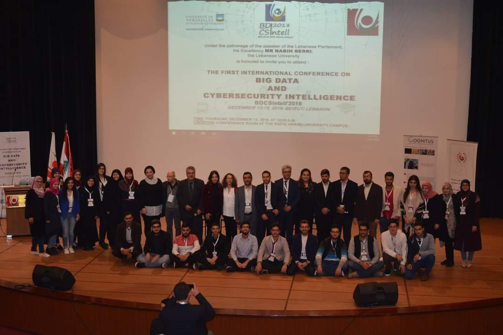
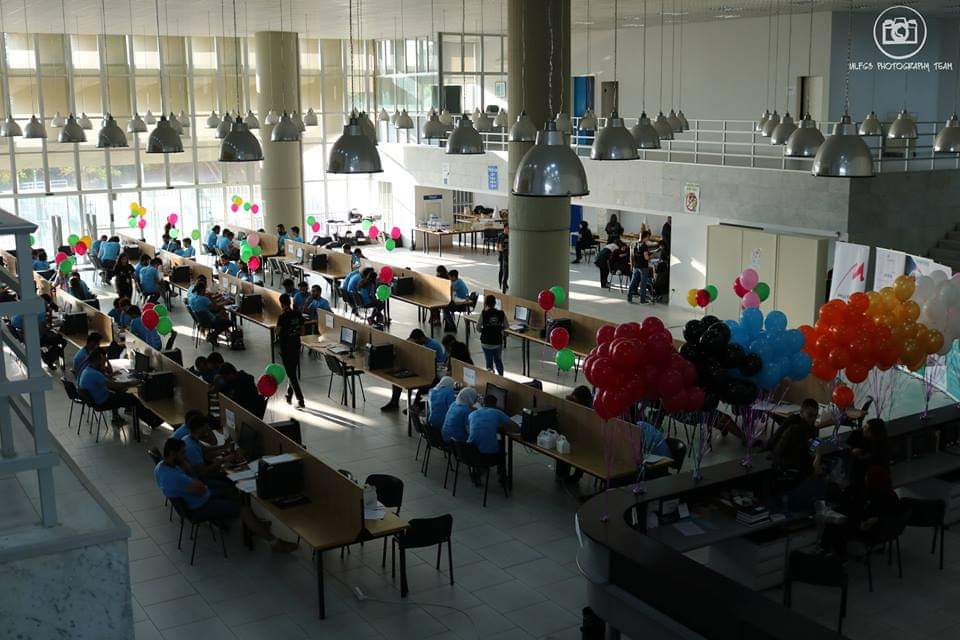
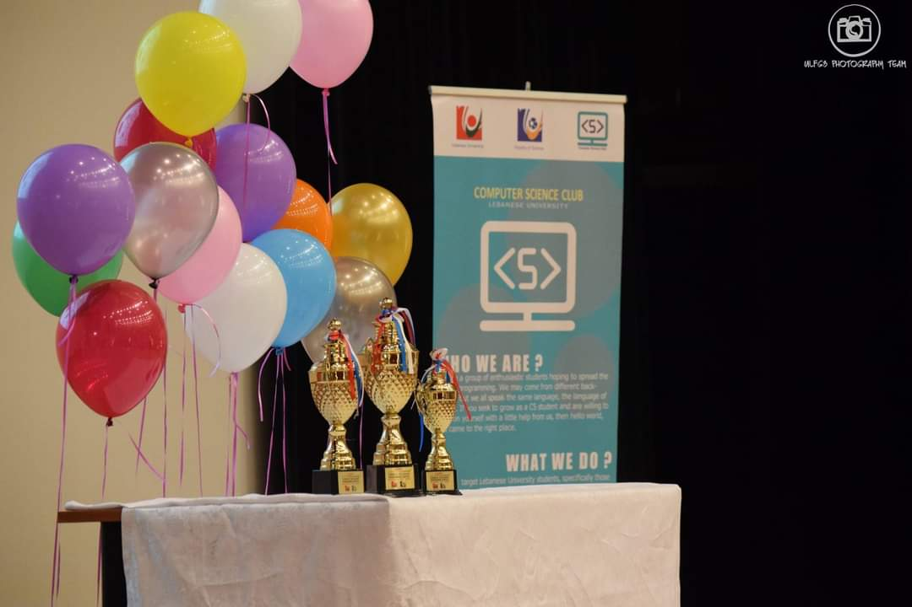

When I was in University, I was a member of Computer Science Club.
At the time, we hosted multiple interresting events.
Big Data and Cybersecurity Intelligence Conference: BDCSIntell 2018
BDCSIntell'2018 was the first international Big Data and Cybersecurity Intelligence conference in lebanon that was organized jointly by the Lebanese and French academics and industry experts
The objective of the conference was to promote innovation in the field of data intelligence, explore challenges and opportunities of artificial intelligence with Big Data and increase awareness about various cyber risks such as cyber terrorism.
Lebanese Collegiate Programming Competition (LCPC)
It is the first stage oh three stages held annually, followed by the regional competition at the level of the Arab World and North Africa (ACPC) in the second stage, ending with a final liquidation at the world level (ICPC).
The competition aims to encourage creativity, teamwork, and innovation in building new programs, enabling students to test their abilities to perform under pressure and opening up broad fields of work for them.
 